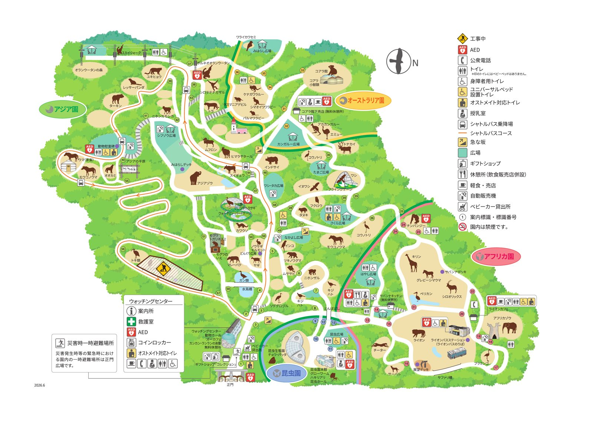
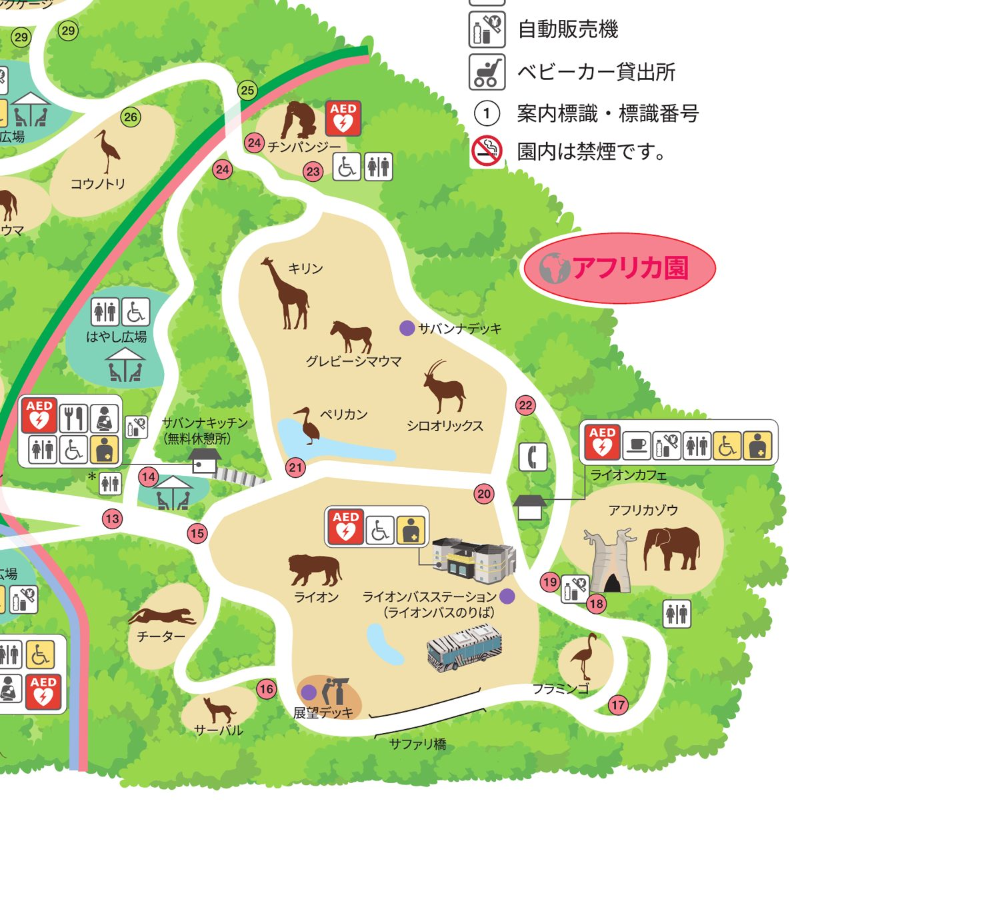
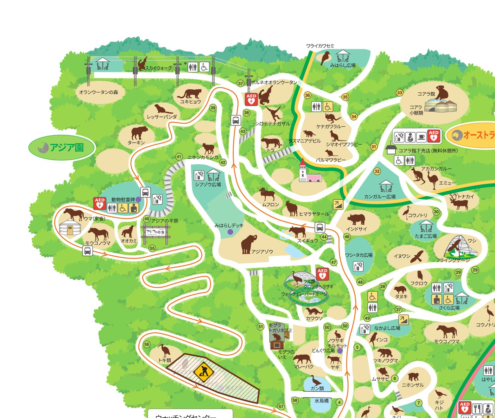
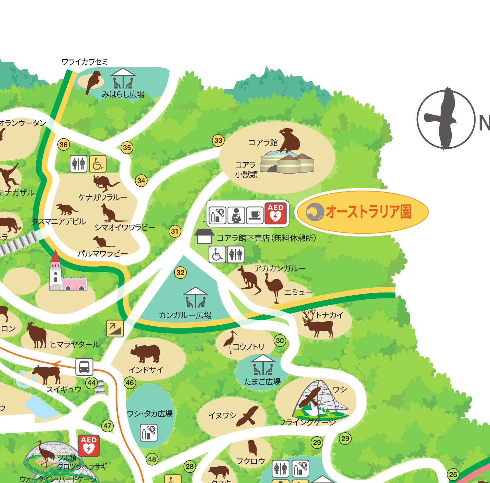
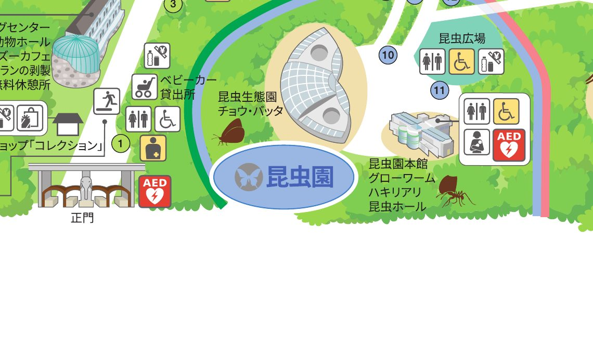

THỨ BẢY 14/11/2026 · GIA ĐÌNH 4 NGƯỜI · XE HƠI TỰ LÁI
Plan thay thế phút chót vì kẹt xe đi Okutama: nhà mình đổi qua 多摩動物公園 (sở thú Tama, Hino), đang ở trong vườn từ khoảng 10:30. Chiều về sớm coi pháo hoa 大田区平和祈念花火2026 ở 六郷土手.
🦁 Sở thú Tama: mở 9:30–17:00. Nguyên tắc đi hôm nay: đi xe shuttle lên đỉnh rồi thả bộ xuống dốc, không leo dốc đẩy xe, không đi ngược đường. Chỉ chọn điểm "đinh" của mỗi khu, bỏ qua khu côn trùng (đang đóng tới 1/2027).
🎆 Pháo hoa: bắn 17:30–18:00, khoảng 5.000 phát, ở bờ sông Tama phía Ota — bãi bắn nằm ở khu sân bóng chày 多摩川緑地野球場 （西六郷四丁目地先， ga 六郷土手）. Quyết định tổ chức hay hủy công bố trước 11:00 hôm nay — xem trang Ota khi tới giờ.
⚠️ Quan trọng: ban tổ chức dặn không coi từ bờ sông phía Kawasaki (hẹp, không có nhà vệ sinh, nguy hiểm) — nhà mình qua hẳn phía Ota coi cho đàng hoàng. Hội pháo hoa không có bãi xe riêng, các bãi coin quanh ga 六郷土手 đều nhỏ (3–13 xe) nên phải tới sớm.

Toàn cảnh: cổng chính ở dưới cùng; khu Africa bên phải (hồng), khu Asia bên trái (xám), khu Australia trên cùng giữa (vàng), khu côn trùng dưới giữa (xanh dương, đang đóng). Đường màu cam là tuyến shuttle bus miễn phí vòng quanh khu Asia.

Khu Africa: trạm Lion Bus ở giữa dưới, sư tử bên trái trạm, voi châu Phi bên phải; hươu cao cổ + ngựa vằn ở khoảnh savanna phía trên; tinh tinh trên cùng; báo cheetah dưới trái; quán Savanna Kitchen ở rìa trái (cạnh quảng trường はやし広場).

Khu Asia: rừng đười ươi + Sky Walk trên cùng trái, kế là báo tuyết, gấu trúc đỏ, hổ ở giữa; voi châu Á và tê giác Ấn Độ ở giữa phải; đồng cỏ châu Á (ngựa Mông Cổ, sói) ở rìa trái. Shuttle chạy vòng cam: lên trạm đười ươi rồi thả bộ xuống theo đường này.

Khu Australia: nhà koala ở trên cùng (số 33), quảng trường kangaroo ở giữa, wallaby và quỷ Tasmania quanh đó. Khu này ở chỗ cao nhất vườn, đi sau khu Asia là tiện đường nhất.

Khu côn trùng: nằm ngay trên cổng chính — nhà côn trùng đang đóng tới 1/2027 nên hôm nay bỏ qua, để dành sức.
Xe sư tử mới chạy lại từ 12/11, nay chạy 10:00–15:00, vé chỉ định giờ. Lên xe ngồi coi sư tử ăn sát kính, hai bé ngồi lòng được, khỏi đi bộ đoạn này.
Khu Africa có một phần đường đang đóng vì sạt lở (đã mở lại một phần từ 3/10) — đi theo biển chỉ đường trong vườn.
Hươu cao cổ → tinh tinh → ngựa vằn/khu savanna. Cụm này đường tương đối phẳng, gần cổng, là đoạn dễ đi nhất với xe đẩy — coi gọn trong lúc còn ở khu này, đừng quay lại lần hai.
Ăn ngay trong khu Africa trước giờ cao điểm 12:00 của ngày thứ Bảy. Phòng cho bú và nước nóng pha sữa có ở Watching Center và khu nghỉ miễn phí của khu Africa; bàn thay tã có ở hầu hết nhà vệ sinh.
Ra trạm ソデグロヅル舎前 (gần cổng chính, đầu khu Asia), lên xe shuttle miễn phí chạy vòng khu Asia mỗi khoảng 10 phút (10:00–15:50), ngồi tới trạm cao nhất オランウータン舎前 rồi xuống. Từ đó toàn là thả bộ xuống dốc.
Đười ươi (có cầu Sky Walk nếu đang mở) → báo tuyết → hổ → voi châu Á → đồng cỏ châu Á. Nếu đúng 14:00 còn ở chuồng ngựa モウコノウマ thì ghé nghe buổi nói chuyện của nhân viên vườn thú, không thì bỏ qua.
Đây là đoạn Bơ ngủ trưa chính: đi đều, chậm, đừng dừng lâu ở mỗi chuồng.
Điểm lớn cuối cùng trước khi xuống cổng. Koala mới về (Sora) có thể đông người coi — xếp hàng lâu quá thì coi kangaroo rồi đi tiếp, đừng cố.
Thả bộ xuống cổng chính, ghé khu thú nhỏ gần cổng và mua quà lưu niệm nếu muốn. 15:30 rời sở thú — sớm hơn giờ đóng cửa để kịp pháo hoa và tránh kẹt lúc tan tầm.
Lái ước chừng 50–60 phút chiều thứ Bảy. Bãi ưu tiên: エコロパーク エンゼルハイム西六郷第2 （大田区西六郷4-13) — 11 xe, tối đa 1.100 yên/24 giờ, sát 多摩川緑地， đi bộ ra bờ sông gần nhất.
📍 Mở Google Maps tới bãi xe ưu tiênBãi dự phòng nếu bãi trên đầy: タイムズ京急六郷土手 （仲六郷4-31) — 13 xe, tối đa 1.300 yên/24 giờ, ngay ga 六郷土手. Cả hai đều nhỏ, ngày pháo hoa đầy rất sớm — đầy cả hai thì đậu quanh ga 雑色/蒲田 rồi đi 京急 vào 1–2 ga.
Dự phòng: タイムズ京急六郷土手Đi bộ từ bãi xe ra khu sân bóng chày 多摩川緑地野球場 phía Ota — đây mới là bãi bắn thật (đã đính chính sau chuyến đi, coi chi tiết ở cuối trang), chọn chỗ ngồi sớm. Khu quầy hàng và xe bán đồ ăn ở bãi bắn mở 15:00–19:00 — ăn tối tại đó luôn, hai bé khỏi phải chờ.
📍 Mở Google Maps đi bộ ra bờ sôngTrời tối và lạnh nhanh sau 16:40 — mang áo ấm dày cho hai bé, thêm chăn mỏng đắp xe đẩy.
Khoảng 5.000 phát trong 30 phút, bắn từ bãi sông ngay trước mặt. Tiếng nổ lớn — Bắp có thể giật mình, ba mẹ ôm sát và bịt tai cho hai bé lúc loạt đầu.
Chờ khoảng 15 phút cho người tản bớt rồi ra xe. Lái về Kamihirama ước chừng 25–35 phút sau pháo hoa, về nhà khoảng 18:50–19:00.
📍 Mở Google Maps chặng về nhàPhương án không lái xe: siêu thị ライフ川崎塚越店 （幸区塚越4-298-1) mở sân thượng cho coi pháo hoa 16:00–18:30,先着 khoảng 500 người — nhưng hôm đó không cho đậu xe/bicycle, chỉ hợp nếu nhà mình đi bộ/tàu từ nhà qua (ga 矢向 đi bộ 8 phút).
Tham khảo: ライフ川崎塚越店📝 Đính chính sau chuyến đi (tối 14/11): vị trí bắn thật là khu sân bóng chày 多摩川緑地野球場 (tọa độ 35.5409, 139.7019) — bản plan ban đầu ghi 六郷橋緑地 là sai, làm nhà mình chạy lên đó rồi phải vòng lại. Các bãi coin quanh 六郷土手 chiều đó cũng đầy, không kiếm được chỗ gửi xe, cuối cùng nhà mình coi từ phía Kawasaki. Bài học cho lần sau: ghim đúng điểm sân bóng chày này và tới giữ chỗ xe sớm hơn nhiều.
Plan làm ngay trong sáng 14/11/2026 khi nhà mình đổi hướng ở cổng sở thú — chúc cả nhà coi được nhiều thú và pháo hoa đẹp 🦁🎆
Bản đồ: bản đồ chính thức của 多摩動物公園 (Tokyo Zoological Park Society), cắt theo từng khu từ tờ bản đồ phát trong vườn.